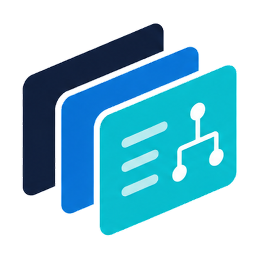

OpenADUC
An open-source, self-hosted replacement for the legacy Microsoft "Active Directory Users and Computers" MMC snap-in — with a real audit trail behind every change.
Runs as a small container next to your domain controllers, talks to AD over LDAPS, and gives sysadmins a fast, browser-based way to find users, reset passwords, unlock accounts, manage groups, and review who changed what — without remoting into a Windows server.
Everything ADUC did — plus what it didn't.
Built for small-to-mid-size IT teams that want a UI more responsive than the MMC, an audit trail more complete than the Windows event log, and a deployment story simpler than RSAT-on-a-jump-box.
Users
Search, view, and edit attributes. Reset passwords, unlock and enable/disable accounts, move between OUs — all from a fast typeahead, no MMC console required.
Groups & memberships
Browse members and memberOf relationships. Add and remove members inline. See nested groups expanded without clicking through five property dialogs.
Computers & OUs
Find a computer object, see where it lives in the OU tree, disable it, or browse the tree directly. Group Policy: list GPOs, inspect linked OUs and enabled CSEs.
Append-only audit log
Every write is logged with actor, target, before/after, and step-up status. Database
triggers reject UPDATE,
DELETE, and
TRUNCATE on
audit rows — even a compromised app can't rewrite history.
Step-up re-auth on every write
Mutating calls require re-entering the AD password. The elevated session is short-lived (default 60 min) and password material lives only in process memory.
Dashboard & first-run wizard
Sync status, recent activity, and locked-account counts at a glance. A guided first-run wizard handles directory connection, the recovery account, and role bootstrap.
Treated like the tier-0 tool it is.
OpenADUC sits in front of Active Directory and writes to it on behalf of operators. The defaults assume that.
-
LDAPS only. Outbound TCP/636 to your DCs. Plain LDAP (389) is not supported, by design.
-
Live AD bind on every sign-in. No application-layer password store outside the local break-glass recovery account.
-
Encrypted secrets at rest. Service-account passwords, Entra client secrets, and Teams webhooks are AES-256-GCM encrypted with a key you back up alongside your database.
-
You terminate TLS. The bundled web container speaks plain HTTP on :8080 and expects a real reverse proxy (nginx, Caddy, Traefik) in front.
-
Append-only audit at the DB layer. Postgres triggers enforce immutability — the app can't UPDATE or DELETE audit rows, period.
One line on a Linux host with Docker.
The installer prompts for an install directory, asks whether to use bundled Postgres or an existing one, generates strong secrets, and brings the stack up. Then open the printed URL to run the first-run wizard.
curl -fsSL https://openaduc.com/install.sh | bash
Prefer the manual path? See docs/installation.md for clone-edit-env-compose-up.
Boring, modern, auditable.
Nothing exotic. Easy to read, easy to fork, easy to operate.